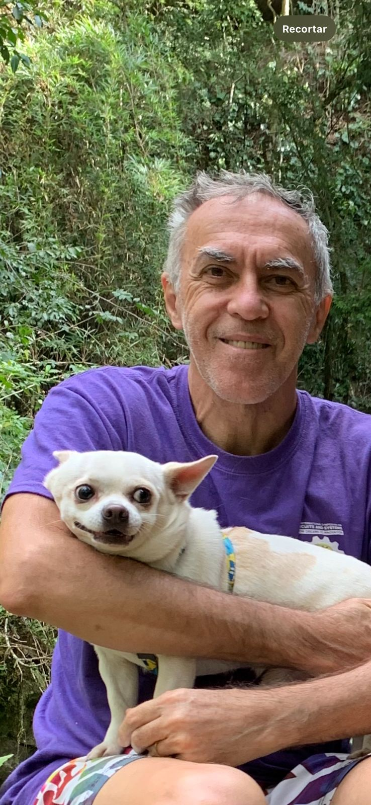

Estimativa (IA)
Projeção após uma semana
Imagem gerada com apoio de IA em 18/10/2025 baseada em relatos de voluntários.
Ajude a encontrar Antônio Petraglia
Desaparecido desde 12/10/2025. Último contato registrado na região central do Rio de Janeiro.
- Idade70 anos
- Altura1,75 m
- OlhosCastanhos
- CabeloGrisalho
- VestimentasShorts preto, blusa cinza esverdeada, tênis claro
- Condição médicaLeve grau de Alzheimer
Atenção: a imagem destacada é uma projeção com IA após uma semana desaparecido. Use as setas para compartilhar todas as fotos oficiais e estimadas.